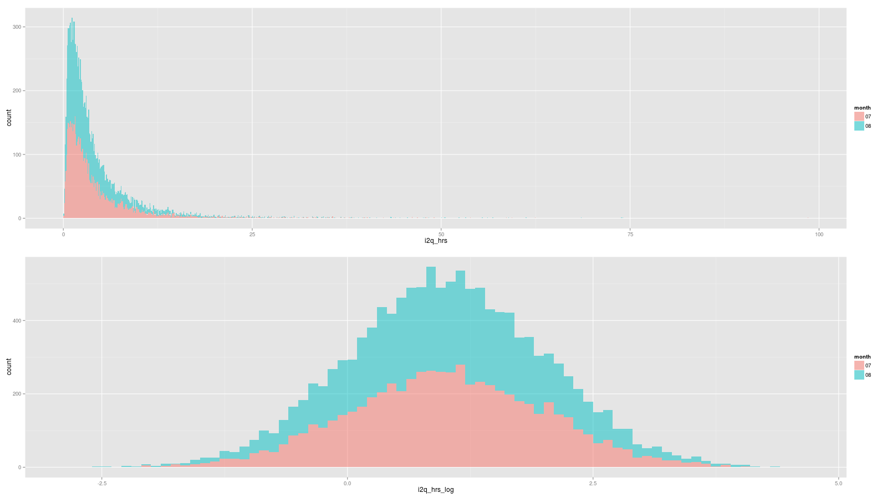
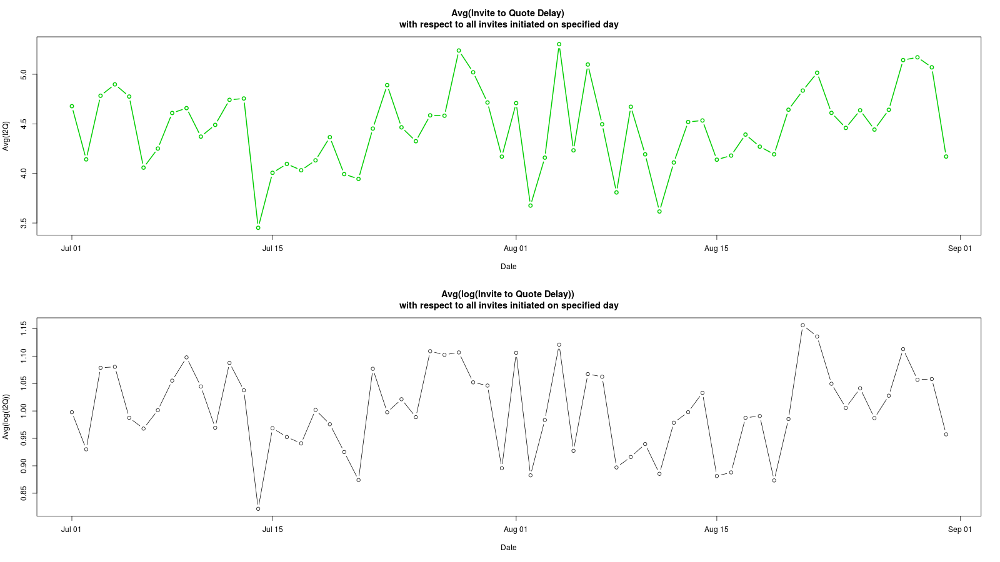
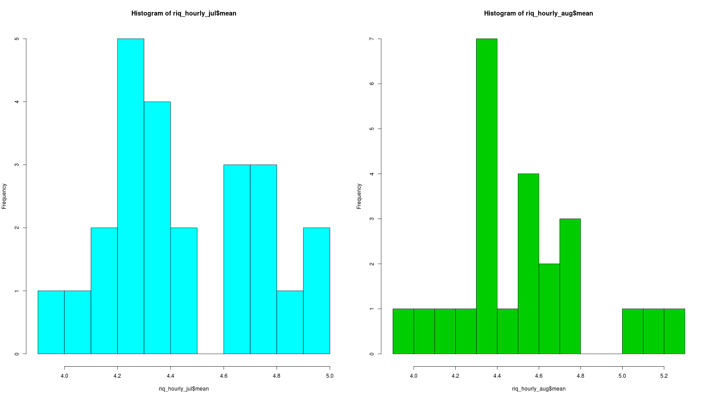
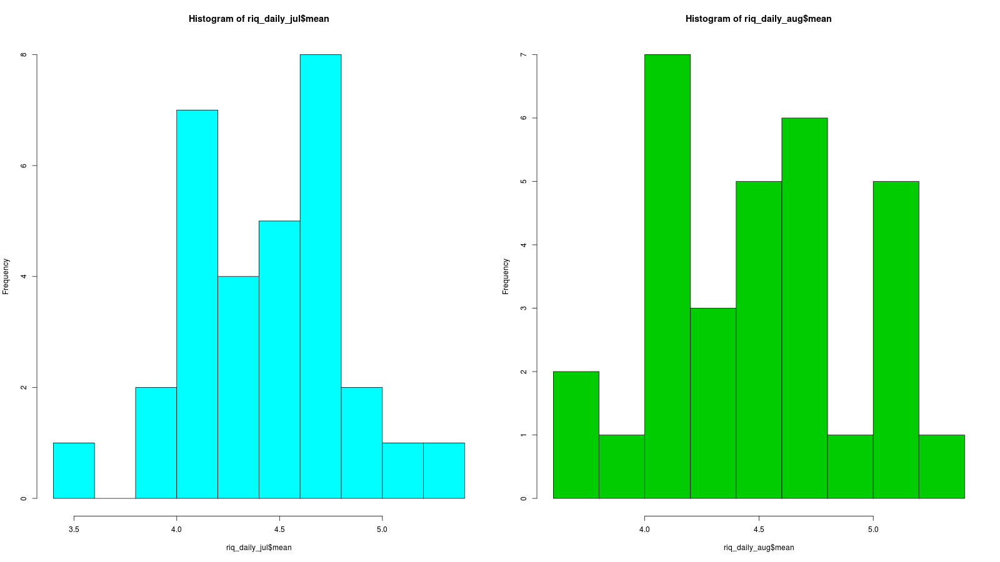
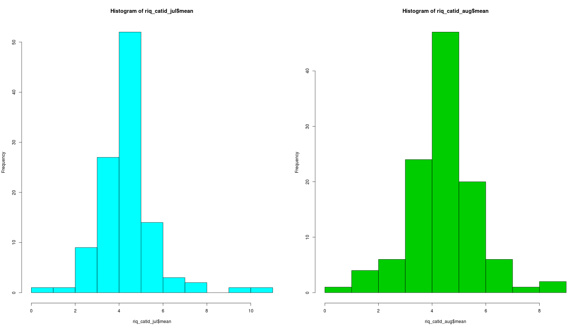
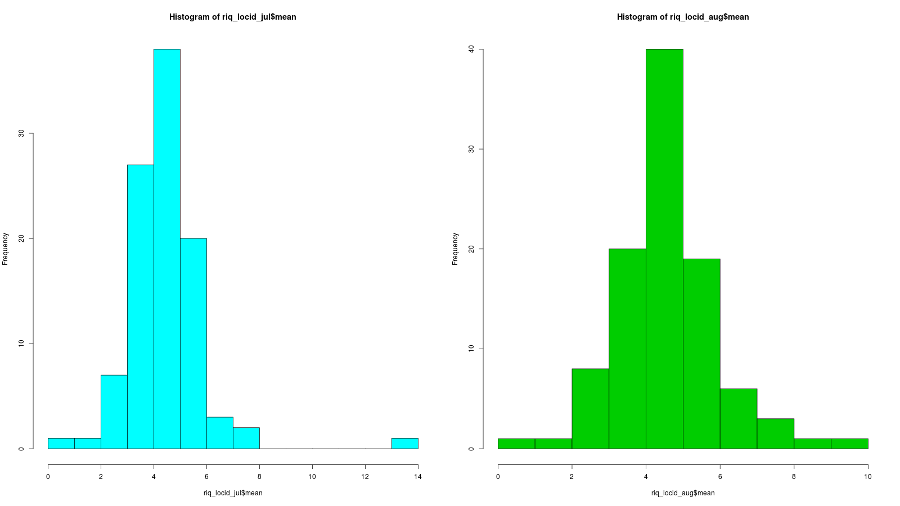
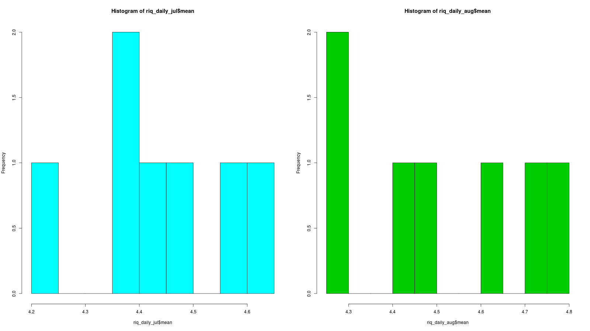
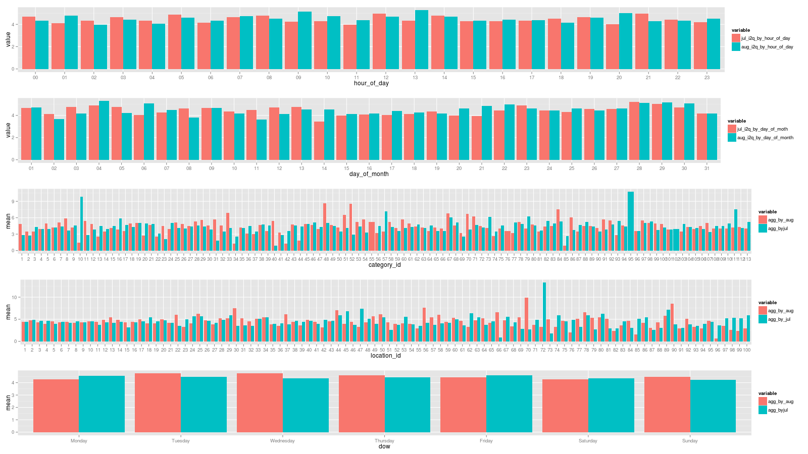
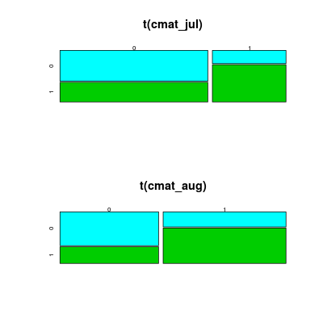

.... This analysis studies the variable timedelay(invite-to-quote). I measure this metric in terms of hours and as follows: for each invite having a matching quote, substract the invite's sent_time from the quote's sent_time. Then, for each day of the months in question, we focus on only those invites that were initiated that day and had a matching quote anywhere into the future. This analysis has a weakness with respect to long-term outlooks in quote reply time (e.g., weeks later, spanning into the next month, etc), however, the data reflects tht average time delay typically within a single day. I will refer from here on to this metric as i2q_hrs. The goal is to determine whether the i2q_hrs for July and August represent different distributions and hopefully identify any relevant business insight related to emerging differences. My approach will be to perform t_tests and explore component effects via aggregation with respect to various factors of interest such as day of the month of the invite, category of the invite, location, day of the week, hour of the day for both months and determine if significant differences with respect to this small dataset appear to emerge.
A1: THE INPUT DATA
------------------------------------------------------------------------TABLE categories FIRST ROWS:
------------------------------------------------------------------------ category_id name 1 1 Photography 2 2 Window Installation 3 3 Portrait Photography 4 4 Wedding Band 5 5 Home Security and Alarms ------------------------------------------------------------------------ ------------------------------------------------------------------------TABLE invites FIRST ROWS:
------------------------------------------------------------------------ invite_id request_id user_id sent_time 1 1 1 312 2013-07-01 13:20:05.072029 2 2 1 850 2013-07-01 15:49:33.110849 3 3 1 555 2013-07-01 13:39:18.608330 4 4 1 917 2013-07-01 08:56:11.751781 5 5 1 215 2013-07-01 08:40:24.151670 ------------------------------------------------------------------------ ------------------------------------------------------------------------TABLE locations FIRST ROWS:
------------------------------------------------------------------------ location_id name 1 1 New York-Newark-Jersey City, NY-NJ-PA 2 2 Los Angeles-Long Beach-Anaheim, CA 3 3 Chicago-Naperville-Elgin, IL-IN-WI 4 4 Dallas-Fort Worth-Arlington, TX 5 5 Houston-The Woodlands-Sugar Land, TX ------------------------------------------------------------------------ ------------------------------------------------------------------------TABLE quotes FIRST ROWS:
------------------------------------------------------------------------ quote_id invite_id sent_time 1 1 4 2013-07-01 11:04:44.204874 2 2 5 2013-07-01 10:39:30.083032 3 3 6 2013-07-01 16:43:37.668191 4 4 8 2013-07-01 22:10:35.168437 5 5 9 2013-07-01 13:02:03.174618 ------------------------------------------------------------------------ ------------------------------------------------------------------------TABLE requests FIRST ROWS:
------------------------------------------------------------------------ request_id user_id category_id location_id creation_time 1 1 1001 46 35 2013-07-01 07:48:54.000000 2 2 1002 83 19 2013-07-01 04:55:25.000000 3 3 1003 63 91 2013-07-01 09:34:53.000000 4 4 1004 56 2 2013-07-01 10:16:40.000000 5 5 1005 64 11 2013-07-01 03:45:47.000000 ------------------------------------------------------------------------ ------------------------------------------------------------------------TABLE users FIRST ROWS:
------------------------------------------------------------------------ user_id email 1 1 william@idxydp.com 2 2 william@dhgtae.com 3 3 liam@aqpvfh.com 4 4 elizabeth@hpgruv.com 5 5 isabella@omwtoj.com ------------------------------------------------------------------------REMARKS:
.... The input data comprises five tables. for this analysis, I will focus on just three of the tables: request, quotes, and invites and augment then with some derived data to analyze the variable of concern: timedelay(invite-to-quote). Next, I construct the design matrix derived via a series of left joins
A2: DESIGN MATRIX: MERGE INVITES, REQUEST, QUOTES
REMARKS:
.... Above, I added several derived fields: day, month, day-of-week (all these being defined with respect to invite's sent_time). I also added a replied field which simply codifies whether the invite was answered with a quote. Finally, the i2q_hrs metric was added as defined above
------------------------------------------------------------------------DESIGN MATRIX SUMMARY:
------------------------------------------------------------------------ request_id invite_id user_id.x sent_time.x quote_id sent_time.y ts.x Min. : 1 Min. : 4 Min. : 1.0 Length:12790 Min. : 1 Length:12790 Min. :1.373e+09 1st Qu.:1299 1st Qu.: 6574 1st Qu.: 235.0 Class :character 1st Qu.: 3198 Class :character 1st Qu.:1.374e+09 Median :2520 Median :12636 Median : 500.0 Mode :character Median : 6396 Mode :character Median :1.375e+09 Mean :2511 Mean :12537 Mean : 497.2 Mean : 6396 Mean :1.375e+09 3rd Qu.:3733 3rd Qu.:18598 3rd Qu.: 746.0 3rd Qu.: 9593 3rd Qu.:1.377e+09 Max. :4961 Max. :24622 Max. :1000.0 Max. :12819 Max. :1.378e+09 ts.y i2q_hrs replied time_hrs date month dow Min. :1.373e+09 Min. : 0.0614 0: 0 Min. : 0.8839 Length:12790 Length:12790 Monday :2189 1st Qu.:1.374e+09 1st Qu.: 1.3968 1:12790 1st Qu.: 384.1797 Class :character Class :character Tuesday :2247 Median :1.375e+09 Median : 2.7253 Median : 748.1650 Mode :character Mode :character Wednesday:2042 Mean :1.375e+09 Mean : 4.4825 Mean : 750.5901 Thursday :1929 3rd Qu.:1.377e+09 3rd Qu.: 5.3659 3rd Qu.:1116.4666 Friday :1741 Max. :1.378e+09 Max. :98.5258 Max. :1487.5520 Saturday :1422 Sunday :1220 daynum hour i2q_hrs_log user_id.y category_id location_id creation_time Length:12790 Length:12790 Min. :-2.7904 Min. :1001 Min. : 1.00 Min. : 1.00 Length:12790 Class :character Class :character 1st Qu.: 0.3342 1st Qu.:2299 1st Qu.: 28.00 1st Qu.: 2.00 Class :character Mode :character Mode :character Median : 1.0026 Median :3520 Median : 63.00 Median : 8.00 Mode :character Mean : 1.0057 Mean :3511 Mean : 60.43 Mean : 19.06 3rd Qu.: 1.6801 3rd Qu.:4733 3rd Qu.: 89.00 3rd Qu.: 28.00 Max. : 4.5903 Max. :5961 Max. :113.00 Max. :100.00 ------------------------------------------------------------------------A: VISUALIZATION: DATA INSPECTION AND CONDITIONING
null device 1REMARKS:
.... The first plot shows that the i2q_hrs timeseries appears to be lognormally distributed; therefore, requiring a log() transform to bring the i2q_hrs time series into a normally distributed timeseries. As shown by the histogram on the second plot, after the log transform was applied, the log(i2q_hrs) significantly resembled a potentially normal distribution. Of course, this normality assumption will be shortly evaluated.
B: VISUALIZATION: PLOT OF AVG(INVITE TO QUOTE DELAY I2Q FOR INVITES SENT IN GIVEN DAY
null device 1REMARKS:
.... The plot above shows the original i2q_hrs timeseries (i.e., delaytime(invite-to-quote) measured in hours. The second plot shows the log-transformed time timeseries, i.e., log(i2q_hrs). Note that the timeseries appears to have a potential monthly pattern (approximately stationary for first two weeks, followed by dip and then, an upwards rally for two weeks until the end of the month. However, with such little data is impossible to examine this and it is left as a pending issue for subsequent examination.
C1: CONFIDENCE INTERVALS FOR POPULATION MEANS: log(i2q) wrt JUL and AUG
------------------------------------------------------------------------CONFIDENCE INTERVAL FOR JUL MEAN:
------------------------------------------------------------------------ One Sample t-test data: exp(jul_samples) t = 65.536, df = 6352, p-value < 2.2e-16 alternative hypothesis: true mean is not equal to 0 95 percent confidence interval: 4.318109 4.584404 sample estimates: mean of x 4.451256 ------------------------------------------------------------------------ ------------------------------------------------------------------------CONFIDENCE INTERVAL FOR AUG MEAN:
------------------------------------------------------------------------ One Sample t-test data: exp(aug_samples) t = 63.322, df = 6436, p-value < 2.2e-16 alternative hypothesis: true mean is not equal to 0 95 percent confidence interval: 4.373638 4.653089 sample estimates: mean of x 4.513364 ------------------------------------------------------------------------REMARKS:
.... Both means are non-zero and the confidence intervals of the means allow the inclusion of the mean for Jul significantly overlaps with the confidence interval for the mean for Aug
C: TEST ASSUMPTION: log(i2q) data normality tests
Shapiro-Wilk normality test data: jul_aug_samples[subset] W = 0.9997, p-value = 0.8777 ------------------------------------------------------------------------ Shapiro-Wilk normality test data: jul_samples[subset] W = 0.9995, p-value = 0.4592 ------------------------------------------------------------------------ Shapiro-Wilk normality test data: aug_samples[subset] W = 0.9997, p-value = 0.758REMARKS:
.... The null-hypothesis of this test is that the population is normally distributed. Resultant p-values for Jul, Aug, and Jul+Aug indicate that cannot be discarded that the samples were taken from normal distributions
D: TEST ASSUMPTION: homo/heteroskedasticity
------------------------------------------------------------------------VARIANCE OF POPULATION SAMPLES BY MONTH
------------------------------------------------------------------------ month i2q_hrs_log 1 07 0.9826153 2 08 1.0079729 ------------------------------------------------------------------------REMARKS:
.... At first inspection, variance of the log(invite_to_quote delay time) appears similar enough. A variance test is applied next.
------------------------------------------------------------------------TEST WRT RATIO OF VARIANCES FROM SAMPLED POPULATIONS
------------------------------------------------------------------------ F test to compare two variances data: jul_samples and aug_samples F = 0.9748, num df = 6352, denom df = 6436, p-value = 0.3084 alternative hypothesis: true ratio of variances is not equal to 1 99.9 percent confidence interval: 0.8978175 1.0584952 sample estimates: ratio of variances 0.9748429 ------------------------------------------------------------------------REMARKS:
.... The alternative hypothesis is rejected, that is, at reasonable confidence levels of 0.999 (or 1 out of 2000), a very high p-value (>0.3) indicates that there is NO evidence that a statistically significant difference between the ratio of the variances exists. Similarly, the confidence interval for the ratio of the variances spans the the ratio 1.
E1: APPLYING STANDARD TWO-SAMPLE T-TEST
------------------------------------------------------------------------TWO SAMPLE, TWO-SIDED, T-TEST FOR DIFFERENCE OF MEANS:
------------------------------------------------------------------------ Two Sample t-test data: i2q_hrs_log by month t = 0.3087, df = 12788, p-value = 0.7575 alternative hypothesis: true difference in means is not equal to 0 99.9 percent confidence interval: -0.05262445 0.06351876 sample estimates: mean in group 07 mean in group 08 1.008449 1.003001 ------------------------------------------------------------------------REMARKS:
.... A two-sided t-test for difference in the sample means from populations having equal variances was applies. The test indicated thati at a confidence interval of 0.999 (i.e., 1/2000), strongly failed to accept the alternative hypothesis that the difference between the means of the two sampled populations ougth to be zero and thus the same. A very strong p-value indicated this not to be the case. As expected, the confidence interval for the difference between these means spans zero, indicative that there is NO discernible difference between these sampled means for July and August.
E2: ANALYSIS OF VARIANCE: One Way Analysis of Variance
------------------------------------------------------------------------ONE WAY ANOVA RESULTS:
------------------------------------------------------------------------ Df Sum Sq Mean Sq F value Pr(>F) as.factor(month) 1 0 0.0643 0.065 0.799 Residuals 12704 12643 0.9952 ------------------------------------------------------------------------REMARKS:
.... A one-way anova test for testing whether samples in these two months are drawn from populations with the same mean values (H0) or (H1) they is statistically significance difference with respect to their means (that is, component effect). The analysis of variance fitted with respect to months, after removing NAs and balancing the data indicates that there is a significant component effect with respec to month towards invite-to-quote delay time (log scale). This is misleading with respect to other findings. Therefore, we review the assumptions necessary for the anova test to be meaningful.
1) the dependent variable Invite2QuoteDelayTime is continuous: OK, 2) the independent variable Month has two levels (Jul, Aug) OK, 3) the observed measurements are independent samples (TROUBLESOME). This means that there is no intuition or knowledge about a possible relationship between the observations within or between groups and this is contrary to known human nature in bidding and recommender systems). 4) there appear to be two significant outliers at 3 sigma levels (TROUBLESOME), 5) the dependent variable ought to be normally distributed (OK, wrt log(I2Q_hrs). 6) the variance of the groups is homogeneous (OK).Assumption (3) is a known issue on this domain and the presence of apparent seasonality on the dependent variable time series indicates that even an ARIMA model may be better suited to explain recurring end-of-week behavior as hinted in findings below. Finally, this claim is consistent with the facts that the anova coefficients (component contributions) are esssentially the same.E3: ANALYSIS OF VARIANCE: LM
------------------------------------------------------------------------ALTERNATIVE ANOVA JUL+AUG VIA LINEAR MODEL
------------------------------------------------------------------------ Call: lm(formula = i2q_hrs_log ~ month, data = riq) Residuals: Min 1Q Median 3Q Max -3.7989 -0.6701 -0.0032 0.6744 3.5819 Coefficients: Estimate Std. Error t value Pr(>|t|) (Intercept) 1.008449 0.012517 80.566 <2e-16 *** month08 -0.005447 0.017644 -0.309 0.758 --- Signif. codes: 0 ‘***’ 0.001 ‘**’ 0.01 ‘*’ 0.05 ‘.’ 0.1 ‘ ’ 1 Residual standard error: 0.9977 on 12788 degrees of freedom Multiple R-squared: 7.453e-06, Adjusted R-squared: -7.074e-05 F-statistic: 0.09531 on 1 and 12788 DF, p-value: 0.7575 ------------------------------------------------------------------------REMARKS:
.... Application of ANOVA equivalent techniques via the lm model to access individual component effects provides NO indication of a statistically significant effect due to month. Albeit the month8 is selected, the model is dominated by the intercept (i.e., a constant output of approx. 1). Finally, ,R2, F, and p values are indicative of a poor fit for which the month provides NO statistical significance component effect.
E4: EXAMINING PRESENCE OF PER FACTOR-LEVEL CHANGES
E5: FACTOR-LEVEL: CHANGES WRT HOUR OF DAY
null device 1------------------------------------------------------------------------HOUR OF DAY: ANOVA JUL VIA AOV
------------------------------------------------------------------------ Df Sum Sq Mean Sq F value Pr(>F) as.factor(hour) 23 17 0.7523 0.765 0.779 Residuals 6329 6224 0.9835 ------------------------------------------------------------------------ ------------------------------------------------------------------------HOUR OF DAY: ANOVA AUG VIA AOV
------------------------------------------------------------------------ Df Sum Sq Mean Sq F value Pr(>F) as.factor(hour) 23 26 1.139 1.131 0.301 Residuals 6413 6461 1.008 ------------------------------------------------------------------------ ------------------------------------------------------------------------HOUR OF DAY: ANOVA JUL VIA LM
------------------------------------------------------------------------ Call: lm(formula = i2q_hrs_log ~ as.factor(hour), data = riq[riq$month == "07", ]) Residuals: Min 1Q Median 3Q Max -3.9055 -0.6526 -0.0035 0.6769 3.4753 Coefficients: Estimate Std. Error t value Pr(>|t|) (Intercept) 1.049980 0.061502 17.072 <2e-16 *** as.factor(hour)01 -0.069774 0.088298 -0.790 0.4294 as.factor(hour)02 -0.045700 0.087316 -0.523 0.6007 as.factor(hour)03 -0.044121 0.088298 -0.500 0.6173 as.factor(hour)04 -0.071337 0.084093 -0.848 0.3963 as.factor(hour)05 0.031687 0.085558 0.370 0.7111 as.factor(hour)06 -0.035910 0.084028 -0.427 0.6691 as.factor(hour)07 -0.015383 0.087665 -0.175 0.8607 as.factor(hour)08 -0.007874 0.085859 -0.092 0.9269 as.factor(hour)09 -0.062706 0.088580 -0.708 0.4790 as.factor(hour)10 -0.073080 0.088206 -0.829 0.4074 as.factor(hour)11 -0.169863 0.087577 -1.940 0.0525 . as.factor(hour)12 0.065068 0.084629 0.769 0.4420 as.factor(hour)13 -0.067843 0.087145 -0.779 0.4363 as.factor(hour)14 -0.015608 0.085558 -0.182 0.8553 as.factor(hour)15 -0.028520 0.086811 -0.329 0.7425 as.factor(hour)16 -0.105024 0.084907 -1.237 0.2162 as.factor(hour)17 -0.007637 0.085558 -0.089 0.9289 as.factor(hour)18 -0.015856 0.086247 -0.184 0.8541 as.factor(hour)19 0.037208 0.086977 0.428 0.6688 as.factor(hour)20 -0.111580 0.086090 -1.296 0.1950 as.factor(hour)21 -0.043290 0.088298 -0.490 0.6240 as.factor(hour)22 -0.041494 0.087402 -0.475 0.6350 as.factor(hour)23 -0.121007 0.087932 -1.376 0.1688 --- Signif. codes: 0 ‘***’ 0.001 ‘**’ 0.01 ‘*’ 0.05 ‘.’ 0.1 ‘ ’ 1 Residual standard error: 0.9917 on 6329 degrees of freedom Multiple R-squared: 0.002772, Adjusted R-squared: -0.0008517 F-statistic: 0.765 on 23 and 6329 DF, p-value: 0.7788 ------------------------------------------------------------------------ ------------------------------------------------------------------------HOUR OF DAY: ANOVA AUG VIA LM
------------------------------------------------------------------------ Call: lm(formula = i2q_hrs_log ~ as.factor(hour), data = riq[riq$month == "08", ]) Residuals: Min 1Q Median 3Q Max -3.5279 -0.6712 -0.0057 0.6758 3.2890 Coefficients: Estimate Std. Error t value Pr(>|t|) (Intercept) 0.94156 0.06225 15.126 <2e-16 *** as.factor(hour)01 0.03052 0.08737 0.349 0.7269 as.factor(hour)02 -0.03321 0.08466 -0.392 0.6949 as.factor(hour)03 0.00564 0.08795 0.064 0.9489 as.factor(hour)04 0.02768 0.08682 0.319 0.7499 as.factor(hour)05 0.12093 0.08855 1.366 0.1721 as.factor(hour)06 0.08416 0.08637 0.974 0.3299 as.factor(hour)07 0.07120 0.08975 0.793 0.4276 as.factor(hour)08 0.03039 0.08706 0.349 0.7270 as.factor(hour)09 0.21652 0.08937 2.423 0.0154 * as.factor(hour)10 0.11769 0.09086 1.295 0.1953 as.factor(hour)11 0.07501 0.08690 0.863 0.3881 as.factor(hour)12 0.12837 0.08847 1.451 0.1468 as.factor(hour)13 0.15638 0.08847 1.768 0.0772 . as.factor(hour)14 0.12458 0.08737 1.426 0.1540 as.factor(hour)15 0.01697 0.08909 0.190 0.8490 as.factor(hour)16 -0.05176 0.08803 -0.588 0.5566 as.factor(hour)17 0.06333 0.08698 0.728 0.4666 as.factor(hour)18 -0.01455 0.08511 -0.171 0.8643 as.factor(hour)19 0.06181 0.08623 0.717 0.4735 as.factor(hour)20 0.15703 0.08615 1.823 0.0684 . as.factor(hour)21 0.02497 0.08559 0.292 0.7705 as.factor(hour)22 0.04679 0.08762 0.534 0.5933 as.factor(hour)23 0.05712 0.08587 0.665 0.5059 --- Signif. codes: 0 ‘***’ 0.001 ‘**’ 0.01 ‘*’ 0.05 ‘.’ 0.1 ‘ ’ 1 Residual standard error: 1.004 on 6413 degrees of freedom Multiple R-squared: 0.00404, Adjusted R-squared: 0.000468 F-statistic: 1.131 on 23 and 6413 DF, p-value: 0.3007 ------------------------------------------------------------------------REMARKS:
.... From examination of the hour-of-day based aggregation visualization, there are appear to be a handful of hours: (specifically, 1AM, 9AM, 1PM, 8PM) at which observable difference takes place, nevertheless, for the majority of hour of day, there is NO statistically significant component effect for hour-of-day for either Jul or Aug subsets. A MILD exception exist for the month of Aug at 9AM hour-of-day but this again occurs at weak R2, F, and p values. NO day of hour was found to have a strong stat. significant. component effect.
E6: FACTOR-LEVEL: CHANGES WRT DAY OF MONTH
png 2------------------------------------------------------------------------DAY OF MONTH: ANOVA JUL VIA AOV
------------------------------------------------------------------------ Df Sum Sq Mean Sq F value Pr(>F) as.factor(daynum) 30 29 0.9804 0.998 0.469 Residuals 6322 6212 0.9826 ------------------------------------------------------------------------ ------------------------------------------------------------------------DAY OF MONTH: ANOVA AUG VIA AOV
------------------------------------------------------------------------ Df Sum Sq Mean Sq F value Pr(>F) as.factor(daynum) 30 42 1.400 1.392 0.0757 . Residuals 6406 6445 1.006 --- Signif. codes: 0 ‘***’ 0.001 ‘**’ 0.01 ‘*’ 0.05 ‘.’ 0.1 ‘ ’ 1 ------------------------------------------------------------------------ ------------------------------------------------------------------------DAY OF MONTH: ANOVA JUL VIA LM
------------------------------------------------------------------------ Call: lm(formula = i2q_hrs_log ~ as.factor(daynum), data = riq[riq$month == "07", ]) Residuals: Min 1Q Median 3Q Max -3.7313 -0.6624 -0.0046 0.6751 3.6209 Coefficients: Estimate Std. Error t value Pr(>|t|) (Intercept) 0.9977334 0.0758047 13.162 <2e-16 *** as.factor(daynum)02 -0.0675810 0.0996380 -0.678 0.498 as.factor(daynum)03 0.0810537 0.1014669 0.799 0.424 as.factor(daynum)04 0.0827229 0.1050204 0.788 0.431 as.factor(daynum)05 -0.0101162 0.1067409 -0.095 0.924 as.factor(daynum)06 -0.0298644 0.1105034 -0.270 0.787 as.factor(daynum)07 0.0036958 0.1099357 0.034 0.973 as.factor(daynum)08 0.0575551 0.0982123 0.586 0.558 as.factor(daynum)09 0.0999518 0.0996380 1.003 0.316 as.factor(daynum)10 0.0470290 0.1036064 0.454 0.650 as.factor(daynum)11 -0.0283030 0.1034848 -0.273 0.784 as.factor(daynum)12 0.0899737 0.1041041 0.864 0.387 as.factor(daynum)13 0.0399372 0.1086827 0.367 0.713 as.factor(daynum)14 -0.1760760 0.1093869 -1.610 0.108 as.factor(daynum)15 -0.0292229 0.0992862 -0.294 0.769 as.factor(daynum)16 -0.0451747 0.0966052 -0.468 0.640 as.factor(daynum)17 -0.0569024 0.1026628 -0.554 0.579 as.factor(daynum)18 0.0042702 0.1033642 0.041 0.967 as.factor(daynum)19 -0.0218473 0.1022150 -0.214 0.831 as.factor(daynum)20 -0.0725285 0.1121166 -0.647 0.518 as.factor(daynum)21 -0.1236406 0.1132060 -1.092 0.275 as.factor(daynum)22 0.0791899 0.0970907 0.816 0.415 as.factor(daynum)23 -0.0001373 0.0991142 -0.001 0.999 as.factor(daynum)24 0.0236799 0.0970907 0.244 0.807 as.factor(daynum)25 -0.0090734 0.0962720 -0.094 0.925 as.factor(daynum)26 0.1112968 0.1065896 1.044 0.296 as.factor(daynum)27 0.1047262 0.1090310 0.961 0.337 as.factor(daynum)28 0.1089680 0.1085114 1.004 0.315 as.factor(daynum)29 0.0544534 0.0979785 0.556 0.578 as.factor(daynum)30 0.0485971 0.0999090 0.486 0.627 as.factor(daynum)31 -0.1020968 0.1009585 -1.011 0.312 --- Signif. codes: 0 ‘***’ 0.001 ‘**’ 0.01 ‘*’ 0.05 ‘.’ 0.1 ‘ ’ 1 Residual standard error: 0.9913 on 6322 degrees of freedom Multiple R-squared: 0.004712, Adjusted R-squared: -1.057e-05 F-statistic: 0.9978 on 30 and 6322 DF, p-value: 0.4693 ------------------------------------------------------------------------ ------------------------------------------------------------------------DAY OF MONTH: ANOVA AUG VIA LM
------------------------------------------------------------------------ Call: lm(formula = i2q_hrs_log ~ as.factor(daynum), data = riq[riq$month == "08", ]) Residuals: Min 1Q Median 3Q Max -3.4686 -0.6752 -0.0080 0.6710 3.3193 Coefficients: Estimate Std. Error t value Pr(>|t|) (Intercept) 1.106188 0.065294 16.942 <2e-16 *** as.factor(daynum)02 -0.223566 0.096668 -2.313 0.0208 * as.factor(daynum)03 -0.122616 0.102156 -1.200 0.2301 as.factor(daynum)04 0.014828 0.103108 0.144 0.8857 as.factor(daynum)05 -0.178719 0.091126 -1.961 0.0499 * as.factor(daynum)06 -0.038905 0.087667 -0.444 0.6572 as.factor(daynum)07 -0.043758 0.092940 -0.471 0.6378 as.factor(daynum)08 -0.209118 0.095767 -2.184 0.0290 * as.factor(daynum)09 -0.190008 0.097072 -1.957 0.0503 . as.factor(daynum)10 -0.166501 0.098349 -1.693 0.0905 . as.factor(daynum)11 -0.220687 0.104957 -2.103 0.0355 * as.factor(daynum)12 -0.127479 0.092537 -1.378 0.1684 as.factor(daynum)13 -0.108389 0.092838 -1.168 0.2430 as.factor(daynum)14 -0.072994 0.091487 -0.798 0.4250 as.factor(daynum)15 -0.224797 0.099900 -2.250 0.0245 * as.factor(daynum)16 -0.218157 0.096936 -2.251 0.0244 * as.factor(daynum)17 -0.118538 0.104742 -1.132 0.2578 as.factor(daynum)18 -0.115441 0.107737 -1.072 0.2840 as.factor(daynum)19 -0.232832 0.091216 -2.553 0.0107 * as.factor(daynum)20 -0.120774 0.089156 -1.355 0.1756 as.factor(daynum)21 0.050216 0.093250 0.539 0.5902 as.factor(daynum)22 0.029680 0.094567 0.314 0.7536 as.factor(daynum)23 -0.056540 0.094917 -0.596 0.5514 as.factor(daynum)24 -0.100428 0.107004 -0.939 0.3480 as.factor(daynum)25 -0.064808 0.102531 -0.632 0.5274 as.factor(daynum)26 -0.119278 0.089080 -1.339 0.1806 as.factor(daynum)27 -0.078302 0.092737 -0.844 0.3985 as.factor(daynum)28 0.006552 0.092537 0.071 0.9436 as.factor(daynum)29 -0.049113 0.092438 -0.531 0.5952 as.factor(daynum)30 -0.047850 0.097912 -0.489 0.6251 as.factor(daynum)31 -0.148732 0.101789 -1.461 0.1440 --- Signif. codes: 0 ‘***’ 0.001 ‘**’ 0.01 ‘*’ 0.05 ‘.’ 0.1 ‘ ’ 1 Residual standard error: 1.003 on 6406 degrees of freedom Multiple R-squared: 0.006476, Adjusted R-squared: 0.001823 F-statistic: 1.392 on 30 and 6406 DF, p-value: 0.07574 ------------------------------------------------------------------------REMARKS:
.... From examination of the day-of-month based aggregation visualization, there appear to be a handful of days, e.g., 6th, 11th, 14th, 20th, 21th, 22th, at which observable difference takes place. The great majority of day-of-month levels exhibit NO discernable effect. Furthermore, when the ANOVA test is applied to Jul and Aug subsets, MILD statistically significant effects are observed for the Aug.s day-of-month: 2, 5, 8, 11, 15, 16, 19). Nevertheless, this mild effect occurs at a relatively weak p-value and weak F-value. The particular sequence of days suggests the potential presence of an ARIMA weekly and monthly seasonal process, taking place the 1st, 2nd, and then 3rd week of the month.
E7: FACTOR-LEVEL: CHANGES WRT CATEGORY OF REQUEST/INVITE/QUOTE
png 2------------------------------------------------------------------------CATEGORY_ID: ANOVA JUL VIA AOV
------------------------------------------------------------------------ Df Sum Sq Mean Sq F value Pr(>F) as.factor(category_id) 110 118 1.075 1.096 0.234 Residuals 6242 6123 0.981 ------------------------------------------------------------------------ ------------------------------------------------------------------------CATEGORY_ID: ANOVA AUG VIA AOV
------------------------------------------------------------------------ Df Sum Sq Mean Sq F value Pr(>F) as.factor(category_id) 110 115 1.049 1.041 0.366 Residuals 6326 6372 1.007 ------------------------------------------------------------------------REMARKS:
.... Anova analysis of the Jul and Aug subsets indicate that there is NO statistically significant component effect for the category_id levels on either of the months.
------------------------------------------------------------------------CATEGORY_ID: INDIVIDUAL COMPONENT EFFECTS VIA LM FOR JUL
------------------------------------------------------------------------ Call: lm(formula = i2q_hrs_log ~ as.factor(category_id), data = riq[riq$month == "07", ]) Residuals: Min 1Q Median 3Q Max -3.7157 -0.6556 -0.0063 0.6695 3.7271 Coefficients: Estimate Std. Error t value Pr(>|t|) (Intercept) 0.69101 0.18392 3.757 0.000173 *** as.factor(category_id)2 -0.12505 0.47961 -0.261 0.794313 as.factor(category_id)3 0.39741 0.29720 1.337 0.181205 as.factor(category_id)4 0.26660 0.25210 1.058 0.290314 as.factor(category_id)5 0.38368 0.21399 1.793 0.073020 . as.factor(category_id)6 0.31157 0.19459 1.601 0.109389 as.factor(category_id)7 0.32928 0.21013 1.567 0.117152 as.factor(category_id)8 -0.22711 0.39554 -0.574 0.565872 as.factor(category_id)9 0.32831 0.20937 1.568 0.116921 as.factor(category_id)10 1.17195 0.44421 2.638 0.008354 ** as.factor(category_id)11 0.20383 0.47961 0.425 0.670855 as.factor(category_id)12 0.45236 0.25793 1.754 0.079508 . as.factor(category_id)13 0.36658 0.21178 1.731 0.083507 . as.factor(category_id)14 0.25546 0.21178 1.206 0.227769 as.factor(category_id)15 0.30132 0.20913 1.441 0.149688 as.factor(category_id)16 0.52482 0.25793 2.035 0.041916 * as.factor(category_id)17 0.32902 0.23585 1.395 0.163057 as.factor(category_id)18 0.33675 0.21039 1.601 0.109511 as.factor(category_id)19 0.36110 0.28003 1.290 0.197272 as.factor(category_id)20 0.42040 0.23295 1.805 0.071169 . as.factor(category_id)21 0.55970 0.23799 2.352 0.018717 * as.factor(category_id)22 0.11467 0.36322 0.316 0.752232 as.factor(category_id)23 -0.35318 0.30254 -1.167 0.243109 as.factor(category_id)24 0.37473 0.25210 1.486 0.137216 as.factor(category_id)25 0.23693 0.20756 1.141 0.253718 as.factor(category_id)26 0.09684 0.22591 0.429 0.668190 as.factor(category_id)27 0.30345 0.23485 1.292 0.196361 as.factor(category_id)28 0.25043 0.25394 0.986 0.324069 as.factor(category_id)29 0.33858 0.21873 1.548 0.121681 as.factor(category_id)30 0.23070 0.20563 1.122 0.261950 as.factor(category_id)31 -0.07191 1.00738 -0.071 0.943094 as.factor(category_id)32 0.14926 0.24871 0.600 0.548440 as.factor(category_id)33 0.20670 0.33059 0.625 0.531829 as.factor(category_id)34 0.03835 0.39554 0.097 0.922763 as.factor(category_id)35 0.24737 0.21505 1.150 0.250054 as.factor(category_id)36 0.41357 0.36322 1.139 0.254898 as.factor(category_id)37 0.08523 0.33059 0.258 0.796553 as.factor(category_id)38 0.36585 0.19198 1.906 0.056736 . as.factor(category_id)39 0.34774 0.24564 1.416 0.156928 as.factor(category_id)40 -0.87678 0.72410 -1.211 0.225999 as.factor(category_id)41 -0.12454 0.30254 -0.412 0.680622 as.factor(category_id)42 0.26233 0.32233 0.814 0.415763 as.factor(category_id)43 0.35257 0.20511 1.719 0.085675 . as.factor(category_id)44 0.68038 0.33997 2.001 0.045401 * as.factor(category_id)45 0.20546 0.29720 0.691 0.489396 as.factor(category_id)46 0.34349 0.27031 1.271 0.203876 as.factor(category_id)47 0.28031 0.20715 1.353 0.176045 as.factor(category_id)48 0.33941 0.22877 1.484 0.137959 as.factor(category_id)49 0.40065 0.24714 1.621 0.105034 as.factor(category_id)50 0.23440 0.25394 0.923 0.356006 as.factor(category_id)51 0.20531 0.23295 0.881 0.378157 as.factor(category_id)52 0.02364 0.36322 0.065 0.948119 as.factor(category_id)53 0.28225 0.21828 1.293 0.196028 as.factor(category_id)54 0.10456 0.36322 0.288 0.773457 as.factor(category_id)56 0.29528 0.20581 1.435 0.151413 as.factor(category_id)57 0.64167 0.39554 1.622 0.104794 as.factor(category_id)58 0.33711 0.27031 1.247 0.212396 as.factor(category_id)59 0.05959 0.22955 0.260 0.795186 as.factor(category_id)60 0.18124 0.24871 0.729 0.466195 as.factor(category_id)61 0.13861 0.28788 0.481 0.630191 as.factor(category_id)62 0.34038 0.21332 1.596 0.110625 as.factor(category_id)63 0.28051 0.19315 1.452 0.146469 as.factor(category_id)64 0.36667 0.19739 1.858 0.063273 . as.factor(category_id)65 0.14594 0.36322 0.402 0.687848 as.factor(category_id)66 0.19646 0.30254 0.649 0.516120 as.factor(category_id)67 0.62963 0.24564 2.563 0.010395 * as.factor(category_id)68 0.49154 0.19557 2.513 0.011982 * as.factor(category_id)69 -0.39711 0.26010 -1.527 0.126882 as.factor(category_id)70 0.18972 0.20675 0.918 0.358841 as.factor(category_id)71 0.44154 0.25588 1.726 0.084465 . as.factor(category_id)72 -0.05695 0.25588 -0.223 0.823878 as.factor(category_id)73 0.17217 0.24032 0.716 0.473767 as.factor(category_id)74 0.10783 0.30845 0.350 0.726656 as.factor(category_id)75 0.29104 0.25588 1.137 0.255395 as.factor(category_id)77 0.08081 0.33059 0.244 0.806900 as.factor(category_id)78 0.37325 0.20735 1.800 0.071897 . as.factor(category_id)79 0.53720 0.20799 2.583 0.009822 ** as.factor(category_id)80 0.34740 0.20889 1.663 0.096358 . as.factor(category_id)81 0.22071 0.20675 1.068 0.285772 as.factor(category_id)82 0.42370 0.20446 2.072 0.038275 * as.factor(category_id)83 0.33684 0.25036 1.345 0.178541 as.factor(category_id)84 0.53632 0.28003 1.915 0.055512 . as.factor(category_id)85 0.04191 0.30254 0.139 0.889834 as.factor(category_id)86 0.16714 0.23799 0.702 0.482536 as.factor(category_id)87 0.38781 0.21149 1.834 0.066742 . as.factor(category_id)88 0.58856 0.25793 2.282 0.022530 * as.factor(category_id)89 0.36452 0.25793 1.413 0.157628 as.factor(category_id)90 0.35149 0.29233 1.202 0.229267 as.factor(category_id)91 0.23429 0.24871 0.942 0.346220 as.factor(category_id)92 0.35221 0.24286 1.450 0.147031 as.factor(category_id)93 0.53828 0.33997 1.583 0.113392 as.factor(category_id)94 0.38465 0.22591 1.703 0.088685 . as.factor(category_id)95 1.60499 0.72410 2.217 0.026692 * as.factor(category_id)96 0.21868 0.30254 0.723 0.469818 as.factor(category_id)97 0.53476 0.32233 1.659 0.097162 . as.factor(category_id)98 0.32530 0.23388 1.391 0.164308 as.factor(category_id)99 0.63339 1.00738 0.629 0.529534 as.factor(category_id)100 0.43825 0.33997 1.289 0.197411 as.factor(category_id)101 0.22396 0.20171 1.110 0.266916 as.factor(category_id)102 0.51130 0.41710 1.226 0.220296 as.factor(category_id)103 0.28814 0.23485 1.227 0.219895 as.factor(category_id)104 0.33884 0.20384 1.662 0.096506 . as.factor(category_id)105 0.30180 0.20369 1.482 0.138482 as.factor(category_id)106 0.29830 0.21093 1.414 0.157347 as.factor(category_id)107 0.02681 0.25210 0.106 0.915300 as.factor(category_id)108 0.36674 0.19668 1.865 0.062277 . as.factor(category_id)109 0.42451 0.27655 1.535 0.124831 as.factor(category_id)110 0.49400 0.21268 2.323 0.020228 * as.factor(category_id)111 0.84228 0.29233 2.881 0.003975 ** as.factor(category_id)112 0.35760 0.20843 1.716 0.086277 . as.factor(category_id)113 0.30085 0.21237 1.417 0.156644 --- Signif. codes: 0 ‘***’ 0.001 ‘**’ 0.01 ‘*’ 0.05 ‘.’ 0.1 ‘ ’ 1 Residual standard error: 0.9904 on 6242 degrees of freedom Multiple R-squared: 0.01894, Adjusted R-squared: 0.001655 F-statistic: 1.096 on 110 and 6242 DF, p-value: 0.2341 ------------------------------------------------------------------------ ------------------------------------------------------------------------CATEGORY_ID: INDIVIDUAL COMPONENT EFFECTS VIA LM FOR AUG
------------------------------------------------------------------------ Call: lm(formula = i2q_hrs_log ~ as.factor(category_id), data = riq[riq$month == "08", ]) Residuals: Min 1Q Median 3Q Max -3.5153 -0.6681 -0.0073 0.6662 3.2288 Coefficients: Estimate Std. Error t value Pr(>|t|) (Intercept) 1.0609411 0.1548627 6.851 8.03e-12 *** as.factor(category_id)2 -0.2953022 0.4097282 -0.721 0.4711 as.factor(category_id)3 -0.2833009 0.4748000 -0.597 0.5507 as.factor(category_id)4 -0.1798962 0.1975253 -0.911 0.3625 as.factor(category_id)5 0.0942174 0.2190089 0.430 0.6671 as.factor(category_id)6 0.0673980 0.2019163 0.334 0.7385 as.factor(category_id)7 -0.0748535 0.1692504 -0.442 0.6583 as.factor(category_id)8 0.2856792 0.2948498 0.969 0.3326 as.factor(category_id)9 -0.0982730 0.1699880 -0.578 0.5632 as.factor(category_id)10 -0.6995213 0.7263704 -0.963 0.3356 as.factor(category_id)11 0.5751813 0.5997806 0.959 0.3376 as.factor(category_id)12 0.1451591 0.3097254 0.469 0.6393 as.factor(category_id)13 -0.5081162 0.2131046 -2.384 0.0171 * as.factor(category_id)14 -0.2248770 0.2040925 -1.102 0.2706 as.factor(category_id)15 -0.0610745 0.2177319 -0.281 0.7791 as.factor(category_id)16 -0.1637484 0.2203403 -0.743 0.4574 as.factor(category_id)17 -0.2035532 0.2603392 -0.782 0.4343 as.factor(category_id)18 0.0231101 0.2165059 0.107 0.9150 as.factor(category_id)19 -0.0784830 0.2048641 -0.383 0.7017 as.factor(category_id)20 -0.3184204 0.3531413 -0.902 0.3673 as.factor(category_id)21 -0.0981537 0.1774805 -0.553 0.5803 as.factor(category_id)22 -0.3381682 0.4748000 -0.712 0.4763 as.factor(category_id)23 -0.0586469 0.2315337 -0.253 0.8000 as.factor(category_id)24 -0.1257508 0.3686470 -0.341 0.7330 as.factor(category_id)25 0.0389700 0.1677128 0.232 0.8163 as.factor(category_id)26 -0.0978398 0.1829889 -0.535 0.5929 as.factor(category_id)27 -0.0851762 0.1834875 -0.464 0.6425 as.factor(category_id)28 0.0631389 0.1827461 0.346 0.7297 as.factor(category_id)29 0.2029052 0.2177319 0.932 0.3514 as.factor(category_id)30 -0.0247521 0.2682301 -0.092 0.9265 as.factor(category_id)31 0.3383615 0.5251650 0.644 0.5194 as.factor(category_id)32 -0.0575234 0.2262869 -0.254 0.7993 as.factor(category_id)33 -0.2590251 0.5997806 -0.432 0.6659 as.factor(category_id)34 -1.0556643 0.7263704 -1.453 0.1462 as.factor(category_id)35 -0.1743614 0.1868983 -0.933 0.3509 as.factor(category_id)36 -0.4767172 0.3531413 -1.350 0.1771 as.factor(category_id)37 -0.3824953 0.2885017 -1.326 0.1850 as.factor(category_id)38 0.0328927 0.2012336 0.163 0.8702 as.factor(category_id)39 -0.4660643 0.3871567 -1.204 0.2287 as.factor(category_id)40 -0.0799194 0.2504463 -0.319 0.7497 as.factor(category_id)41 -0.2940228 0.3018830 -0.974 0.3301 as.factor(category_id)42 -0.8912640 0.4748000 -1.877 0.0605 . as.factor(category_id)43 0.0120201 0.1676621 0.072 0.9428 as.factor(category_id)44 -0.7039827 0.5251650 -1.340 0.1801 as.factor(category_id)45 -0.0003496 0.3531413 -0.001 0.9992 as.factor(category_id)46 -0.0717500 0.2948498 -0.243 0.8077 as.factor(category_id)47 -0.1409880 0.2141950 -0.658 0.5104 as.factor(category_id)48 0.5338563 0.3399292 1.570 0.1164 as.factor(category_id)49 0.0685554 0.1993011 0.344 0.7309 as.factor(category_id)50 0.0289840 0.2475651 0.117 0.9068 as.factor(category_id)51 0.4382623 0.2948498 1.486 0.1372 as.factor(category_id)52 0.9099420 0.5997806 1.517 0.1293 as.factor(category_id)53 0.0647448 0.1813733 0.357 0.7211 as.factor(category_id)54 0.0745543 0.2827393 0.264 0.7920 as.factor(category_id)55 0.0229233 0.2246984 0.102 0.9187 as.factor(category_id)56 -0.3549535 0.2141950 -1.657 0.0975 . as.factor(category_id)57 -0.3668273 0.3018830 -1.215 0.2244 as.factor(category_id)58 0.2387652 0.2376443 1.005 0.3151 as.factor(category_id)59 -0.1421773 0.1848157 -0.769 0.4417 as.factor(category_id)60 0.0821201 0.2131046 0.385 0.7000 as.factor(category_id)61 -0.0165955 0.2100660 -0.079 0.9370 as.factor(category_id)62 -0.0220489 0.2203403 -0.100 0.9203 as.factor(category_id)63 -0.1456391 0.1912413 -0.762 0.4464 as.factor(category_id)64 -0.0856723 0.2110423 -0.406 0.6848 as.factor(category_id)65 0.0029067 0.3686470 0.008 0.9937 as.factor(category_id)66 0.3217876 0.7263704 0.443 0.6578 as.factor(category_id)67 0.1195300 0.2504463 0.477 0.6332 as.factor(category_id)68 0.1206668 0.1993011 0.605 0.5449 as.factor(category_id)69 -0.2363759 0.2535212 -0.932 0.3512 as.factor(category_id)70 0.2329894 0.2448594 0.952 0.3414 as.factor(category_id)71 -0.1123760 0.2315337 -0.485 0.6274 as.factor(category_id)72 0.0808948 0.4380179 0.185 0.8535 as.factor(category_id)73 0.0134580 0.2315337 0.058 0.9537 as.factor(category_id)74 -0.2856870 0.2827393 -1.010 0.3123 as.factor(category_id)75 -0.0547894 0.1948646 -0.281 0.7786 as.factor(category_id)76 -0.0567112 0.3686470 -0.154 0.8777 as.factor(category_id)77 -0.1984942 0.4097282 -0.484 0.6281 as.factor(category_id)78 0.1118434 0.1958875 0.571 0.5680 as.factor(category_id)79 -0.1287695 0.1719836 -0.749 0.4540 as.factor(category_id)80 0.0341814 0.1665560 0.205 0.8374 as.factor(category_id)81 -0.2439681 0.1689998 -1.444 0.1489 as.factor(category_id)82 -0.1534974 0.1829889 -0.839 0.4016 as.factor(category_id)83 0.0572609 0.4748000 0.121 0.9040 as.factor(category_id)84 0.2297776 0.2827393 0.813 0.4164 as.factor(category_id)85 -1.3266457 0.7263704 -1.826 0.0678 . as.factor(category_id)86 0.1605689 0.1878830 0.855 0.3928 as.factor(category_id)87 -0.0817626 0.2217296 -0.369 0.7123 as.factor(category_id)88 0.0564071 0.2504463 0.225 0.8218 as.factor(category_id)89 -0.0009025 0.1853823 -0.005 0.9961 as.factor(category_id)90 -0.0310957 0.2774821 -0.112 0.9108 as.factor(category_id)91 0.1540936 0.2203403 0.699 0.4844 as.factor(category_id)92 -0.0108958 0.1900478 -0.057 0.9543 as.factor(category_id)93 -0.3579371 0.2475651 -1.446 0.1483 as.factor(category_id)94 -0.1313918 0.1708055 -0.769 0.4418 as.factor(category_id)96 -0.1210717 0.2535212 -0.478 0.6330 as.factor(category_id)97 -0.0923434 0.2948498 -0.313 0.7541 as.factor(category_id)98 0.1117920 0.3185345 0.351 0.7256 as.factor(category_id)99 0.2688480 0.3686470 0.729 0.4659 as.factor(category_id)100 0.0218970 0.2948498 0.074 0.9408 as.factor(category_id)101 -0.1630827 0.1842698 -0.885 0.3762 as.factor(category_id)103 -0.2379126 0.2246984 -1.059 0.2897 as.factor(category_id)104 -0.0695280 0.1651489 -0.421 0.6738 as.factor(category_id)105 -0.0377800 0.2203403 -0.171 0.8639 as.factor(category_id)106 -0.0393900 0.1702754 -0.231 0.8171 as.factor(category_id)107 0.0761646 0.1825074 0.417 0.6765 as.factor(category_id)108 -0.1083572 0.1627708 -0.666 0.5056 as.factor(category_id)109 -0.1356001 0.2603392 -0.521 0.6025 as.factor(category_id)110 -0.1122168 0.1892950 -0.593 0.5533 as.factor(category_id)111 -0.0067452 0.2827393 -0.024 0.9810 as.factor(category_id)112 -0.1254390 0.2475651 -0.507 0.6124 as.factor(category_id)113 -0.0261085 0.2279517 -0.115 0.9088 --- Signif. codes: 0 ‘***’ 0.001 ‘**’ 0.01 ‘*’ 0.05 ‘.’ 0.1 ‘ ’ 1 Residual standard error: 1.004 on 6326 degrees of freedom Multiple R-squared: 0.01778, Adjusted R-squared: 0.0007042 F-statistic: 1.041 on 110 and 6326 DF, p-value: 0.3659 ------------------------------------------------------------------------REMARKS:
.... Anova analysis of the Jul and Aug subsets indicate that there NO statistical significant difference at specific category levels between the two months, specifically, though several categories (10, 16, 21 44, 67, 68, 79, 82, 88, 95, 110, 111) have MILDLY significant effects but at poor R2, F and p values.
REMARKS:
.... From examination of the category_id based aggregation visualization, it appears that there are a handful of categories, (e.g., 8, 10, etc.) at which significant difference appears to take place. HOWEVER, when the ANOVA test is applied, only a MILD statistically significant effect is observed in categories 67 (A/V), 68 (Tutoring), and 69 (Land Surveying).
E8: FACTOR-LEVEL: CHANGES WRT LOCATION OF REQUEST/INVITE/QUOTE
png 2------------------------------------------------------------------------LOCATION_ID: ANOVA JUL VIA AOV
------------------------------------------------------------------------ Df Sum Sq Mean Sq F value Pr(>F) as.factor(location_id) 99 96 0.9738 0.991 0.507 Residuals 6253 6145 0.9828 ------------------------------------------------------------------------ ------------------------------------------------------------------------LOCATION_ID: ANOVA AUG VIA AOV
------------------------------------------------------------------------ Df Sum Sq Mean Sq F value Pr(>F) as.factor(location_id) 99 93 0.9428 0.934 0.663 Residuals 6337 6394 1.0090 ------------------------------------------------------------------------ ------------------------------------------------------------------------LOCATION_ID: INDIVIDUAL COMPONENT EFFECTS VIA LM FOR JUL
------------------------------------------------------------------------ Call: lm(formula = i2q_hrs_log ~ as.factor(location_id), data = riq[riq$month == "07", ]) Residuals: Min 1Q Median 3Q Max -3.7687 -0.6637 -0.0018 0.6784 3.6014 Coefficients: Estimate Std. Error t value Pr(>|t|) (Intercept) 0.9782408 0.0277196 35.291 < 2e-16 *** as.factor(location_id)2 0.1096253 0.0511775 2.142 0.03223 * as.factor(location_id)3 0.0229102 0.0548361 0.418 0.67611 as.factor(location_id)4 0.0605619 0.0732168 0.827 0.40818 as.factor(location_id)5 -0.0326467 0.0680991 -0.479 0.63167 as.factor(location_id)6 -0.0449680 0.0674404 -0.667 0.50494 as.factor(location_id)7 -0.0591719 0.0783494 -0.755 0.45014 as.factor(location_id)8 0.0853288 0.0866001 0.985 0.32450 as.factor(location_id)9 0.0069376 0.1064690 0.065 0.94805 as.factor(location_id)10 0.0245010 0.0833620 0.294 0.76884 as.factor(location_id)11 0.0167658 0.0915786 0.183 0.85474 as.factor(location_id)12 -0.0443937 0.1019962 -0.435 0.66340 as.factor(location_id)13 0.0218901 0.0980919 0.223 0.82342 as.factor(location_id)14 0.0811668 0.1086765 0.747 0.45517 as.factor(location_id)15 -0.2014917 0.1054190 -1.911 0.05601 . as.factor(location_id)16 0.0449159 0.1320047 0.340 0.73367 as.factor(location_id)17 0.1852186 0.1024628 1.808 0.07071 . as.factor(location_id)18 0.0922897 0.1402409 0.658 0.51051 as.factor(location_id)19 -0.0747476 0.1309490 -0.571 0.56815 as.factor(location_id)20 0.0931876 0.1185279 0.786 0.43178 as.factor(location_id)21 -0.0134399 0.1353425 -0.099 0.92090 as.factor(location_id)22 -0.1658706 0.1330881 -1.246 0.21269 as.factor(location_id)23 -0.0955116 0.1611435 -0.593 0.55340 as.factor(location_id)24 0.3580136 0.1536983 2.329 0.01987 * as.factor(location_id)25 0.1098921 0.1774246 0.619 0.53569 as.factor(location_id)26 0.1408609 0.1893853 0.744 0.45704 as.factor(location_id)27 -0.0633790 0.1429108 -0.443 0.65743 as.factor(location_id)28 0.2446136 0.1747823 1.400 0.16170 as.factor(location_id)29 0.0106744 0.1631881 0.065 0.94785 as.factor(location_id)30 -0.0225871 0.1698444 -0.133 0.89421 as.factor(location_id)31 -0.1507241 0.1861626 -0.810 0.41818 as.factor(location_id)32 -0.0006586 0.2291121 -0.003 0.99771 as.factor(location_id)33 0.1560756 0.1377227 1.133 0.25715 as.factor(location_id)34 0.0561853 0.1536983 0.366 0.71471 as.factor(location_id)35 0.0959925 0.1377227 0.697 0.48583 as.factor(location_id)36 0.1157578 0.1831035 0.632 0.52728 as.factor(location_id)37 -0.1635418 0.1927867 -0.848 0.39630 as.factor(location_id)38 0.0926153 0.1104344 0.839 0.40170 as.factor(location_id)39 -0.0150270 0.1536983 -0.098 0.92212 as.factor(location_id)40 0.0014234 0.2233968 0.006 0.99492 as.factor(location_id)41 0.1430285 0.1631881 0.876 0.38081 as.factor(location_id)42 0.2826116 0.1774246 1.593 0.11124 as.factor(location_id)43 0.1492196 0.1269800 1.175 0.23998 as.factor(location_id)44 0.3408008 0.1774246 1.921 0.05480 . as.factor(location_id)45 0.2953363 0.2352996 1.255 0.20947 as.factor(location_id)46 -0.0426532 0.2131644 -0.200 0.84141 as.factor(location_id)47 0.8297656 0.4964446 1.671 0.09469 . as.factor(location_id)48 0.1169735 0.1698444 0.689 0.49103 as.factor(location_id)49 -0.0899682 0.2085590 -0.431 0.66621 as.factor(location_id)50 0.4874565 0.2663929 1.830 0.06732 . as.factor(location_id)51 -0.3414294 0.3001829 -1.137 0.25541 as.factor(location_id)52 -0.0548214 0.1747823 -0.314 0.75379 as.factor(location_id)53 0.1339373 0.2493804 0.537 0.59123 as.factor(location_id)54 -0.2291989 0.2042462 -1.122 0.26183 as.factor(location_id)55 0.0806130 0.3515861 0.229 0.81866 as.factor(location_id)56 0.2238512 0.2420279 0.925 0.35505 as.factor(location_id)57 -0.1150661 0.2001964 -0.575 0.56547 as.factor(location_id)58 -0.0434387 0.2420279 -0.179 0.85757 as.factor(location_id)59 0.0268766 0.1747823 0.154 0.87779 as.factor(location_id)60 0.0162387 0.2001964 0.081 0.93535 as.factor(location_id)61 -0.1568094 0.1611435 -0.973 0.33054 as.factor(location_id)62 0.0617808 0.3757153 0.164 0.86939 as.factor(location_id)63 0.0989737 0.1893853 0.523 0.60127 as.factor(location_id)64 0.0157274 0.1722584 0.091 0.92726 as.factor(location_id)65 -0.1117888 0.2233968 -0.500 0.61681 as.factor(location_id)66 -1.1698156 0.4442065 -2.633 0.00847 ** as.factor(location_id)67 0.1680715 0.2180969 0.771 0.44096 as.factor(location_id)68 0.2119584 0.2663929 0.796 0.42626 as.factor(location_id)69 -0.0573158 0.3515861 -0.163 0.87051 as.factor(location_id)70 -0.3655972 0.2875146 -1.272 0.20357 as.factor(location_id)71 0.1630614 0.2180969 0.748 0.45470 as.factor(location_id)72 0.8284879 0.4056611 2.042 0.04116 * as.factor(location_id)73 -1.0638064 0.7015312 -1.516 0.12947 as.factor(location_id)74 0.3502501 0.2131644 1.643 0.10041 as.factor(location_id)75 0.3272917 0.2663929 1.229 0.21927 as.factor(location_id)76 0.1734402 0.2291121 0.757 0.44907 as.factor(location_id)77 -0.2256171 0.2131644 -1.058 0.28991 as.factor(location_id)78 0.3302152 0.2233968 1.478 0.13942 as.factor(location_id)79 -0.2210567 0.3147124 -0.702 0.48245 as.factor(location_id)80 0.4246742 0.4964446 0.855 0.39235 as.factor(location_id)81 -0.2838712 0.2574595 -1.103 0.27025 as.factor(location_id)82 -0.2653112 0.2493804 -1.064 0.28742 as.factor(location_id)83 0.1871083 0.3147124 0.595 0.55217 as.factor(location_id)84 -0.0087211 0.3757153 -0.023 0.98148 as.factor(location_id)85 0.4223008 0.2875146 1.469 0.14194 as.factor(location_id)86 0.1784715 0.2663929 0.670 0.50291 as.factor(location_id)87 -0.4511503 0.3316073 -1.360 0.17372 as.factor(location_id)88 -0.1366320 0.2763421 -0.494 0.62102 as.factor(location_id)89 0.5373310 0.3316073 1.620 0.10520 as.factor(location_id)90 0.1956859 0.3316073 0.590 0.55514 as.factor(location_id)91 -0.1693017 0.2085590 -0.812 0.41696 as.factor(location_id)92 -0.0133780 0.2574595 -0.052 0.95856 as.factor(location_id)93 -0.1757020 0.4056611 -0.433 0.66494 as.factor(location_id)94 0.0467332 0.2875146 0.163 0.87088 as.factor(location_id)95 0.0471492 0.1801948 0.262 0.79359 as.factor(location_id)96 -0.0728849 0.3515861 -0.207 0.83578 as.factor(location_id)97 0.4210526 0.2291121 1.838 0.06615 . as.factor(location_id)98 0.2124621 0.2574595 0.825 0.40928 as.factor(location_id)99 -0.0068028 0.2085590 -0.033 0.97398 as.factor(location_id)100 0.4117733 0.2180969 1.888 0.05907 . --- Signif. codes: 0 ‘***’ 0.001 ‘**’ 0.01 ‘*’ 0.05 ‘.’ 0.1 ‘ ’ 1 Residual standard error: 0.9913 on 6253 degrees of freedom Multiple R-squared: 0.01545, Adjusted R-squared: -0.0001426 F-statistic: 0.9909 on 99 and 6253 DF, p-value: 0.5071 ------------------------------------------------------------------------ ------------------------------------------------------------------------LOCATION_ID: INDIVIDUAL COMPONENT EFFECTS VIA LM FOR AUG
------------------------------------------------------------------------ Call: lm(formula = i2q_hrs_log ~ as.factor(location_id), data = riq[riq$month == "08", ]) Residuals: Min 1Q Median 3Q Max -3.6758 -0.6681 -0.0031 0.6729 3.4115 Coefficients: Estimate Std. Error t value Pr(>|t|) (Intercept) 0.990786 0.028806 34.396 < 2e-16 *** as.factor(location_id)2 0.050483 0.047380 1.065 0.28669 as.factor(location_id)3 0.017841 0.057953 0.308 0.75820 as.factor(location_id)4 -0.088976 0.069988 -1.271 0.20366 as.factor(location_id)5 0.063096 0.071074 0.888 0.37471 as.factor(location_id)6 -0.100570 0.074315 -1.353 0.17601 as.factor(location_id)7 0.036709 0.079270 0.463 0.64332 as.factor(location_id)8 -0.067295 0.082895 -0.812 0.41694 as.factor(location_id)9 -0.098463 0.095395 -1.032 0.30204 as.factor(location_id)10 0.063060 0.088525 0.712 0.47628 as.factor(location_id)11 0.056108 0.096115 0.584 0.55940 as.factor(location_id)12 0.156761 0.104018 1.507 0.13185 as.factor(location_id)13 0.208189 0.101290 2.055 0.03988 * as.factor(location_id)14 0.184354 0.118769 1.552 0.12066 as.factor(location_id)15 -0.083853 0.125171 -0.670 0.50294 as.factor(location_id)16 -0.058252 0.149324 -0.390 0.69647 as.factor(location_id)17 -0.049644 0.113321 -0.438 0.66134 as.factor(location_id)18 -0.172186 0.142244 -1.210 0.22613 as.factor(location_id)19 -0.025711 0.127878 -0.201 0.84066 as.factor(location_id)20 0.121434 0.121044 1.003 0.31579 as.factor(location_id)21 -0.227262 0.131798 -1.724 0.08470 . as.factor(location_id)22 0.155812 0.131798 1.182 0.23717 as.factor(location_id)23 -0.201218 0.128823 -1.562 0.11834 as.factor(location_id)24 0.009995 0.172215 0.058 0.95372 as.factor(location_id)25 0.029439 0.142244 0.207 0.83605 as.factor(location_id)26 0.031428 0.138474 0.227 0.82046 as.factor(location_id)27 -0.167793 0.185642 -0.904 0.36611 as.factor(location_id)28 0.099987 0.199091 0.502 0.61553 as.factor(location_id)29 0.010688 0.144947 0.074 0.94122 as.factor(location_id)30 0.334169 0.202952 1.647 0.09970 . as.factor(location_id)31 0.024006 0.157649 0.152 0.87898 as.factor(location_id)32 0.096941 0.138474 0.700 0.48391 as.factor(location_id)33 0.197258 0.163405 1.207 0.22741 as.factor(location_id)34 -0.002567 0.143575 -0.018 0.98574 as.factor(location_id)35 -0.184146 0.126955 -1.450 0.14697 as.factor(location_id)36 -0.171191 0.136130 -1.258 0.20860 as.factor(location_id)37 0.038497 0.216086 0.178 0.85860 as.factor(location_id)38 0.050022 0.154147 0.325 0.74556 as.factor(location_id)39 -0.107492 0.147819 -0.727 0.46714 as.factor(location_id)40 0.080439 0.167630 0.480 0.63134 as.factor(location_id)41 0.041992 0.245321 0.171 0.86409 as.factor(location_id)42 -0.223598 0.182696 -1.224 0.22104 as.factor(location_id)43 0.123021 0.150879 0.815 0.41489 as.factor(location_id)44 0.172092 0.270001 0.637 0.52390 as.factor(location_id)45 -0.067849 0.174660 -0.388 0.69768 as.factor(location_id)46 0.097285 0.182696 0.532 0.59440 as.factor(location_id)47 -0.109303 0.154147 -0.709 0.47830 as.factor(location_id)48 -0.032012 0.216086 -0.148 0.88223 as.factor(location_id)49 0.020042 0.192003 0.104 0.91687 as.factor(location_id)50 0.392699 0.232238 1.691 0.09090 . as.factor(location_id)51 -0.075142 0.172215 -0.436 0.66261 as.factor(location_id)52 0.029849 0.211421 0.141 0.88773 as.factor(location_id)53 0.169424 0.221081 0.766 0.44350 as.factor(location_id)54 -0.009878 0.211421 -0.047 0.96274 as.factor(location_id)55 -0.319807 0.185642 -1.723 0.08499 . as.factor(location_id)56 0.085212 0.318950 0.267 0.78935 as.factor(location_id)57 0.280342 0.195448 1.434 0.15152 as.factor(location_id)58 0.114784 0.165476 0.694 0.48792 as.factor(location_id)59 0.136779 0.185642 0.737 0.46128 as.factor(location_id)60 -0.131800 0.318950 -0.413 0.67945 as.factor(location_id)61 0.104512 0.172215 0.607 0.54396 as.factor(location_id)62 0.022735 0.411090 0.055 0.95590 as.factor(location_id)63 -0.013517 0.165476 -0.082 0.93490 as.factor(location_id)64 0.236101 0.185642 1.272 0.20349 as.factor(location_id)65 -0.042391 0.304231 -0.139 0.88919 as.factor(location_id)66 0.096680 0.318950 0.303 0.76181 as.factor(location_id)67 0.177903 0.221081 0.805 0.42103 as.factor(location_id)68 -0.182870 0.318950 -0.573 0.56643 as.factor(location_id)69 0.123569 0.252768 0.489 0.62495 as.factor(location_id)70 1.072016 0.411090 2.608 0.00914 ** as.factor(location_id)71 -0.118838 0.232238 -0.512 0.60887 as.factor(location_id)72 -0.302808 0.291397 -1.039 0.29877 as.factor(location_id)73 0.196839 0.226449 0.869 0.38475 as.factor(location_id)74 -0.144797 0.245321 -0.590 0.55505 as.factor(location_id)75 0.161100 0.260952 0.617 0.53702 as.factor(location_id)76 -0.409967 0.380751 -1.077 0.28164 as.factor(location_id)77 0.264076 0.260952 1.012 0.31159 as.factor(location_id)78 0.571373 0.336065 1.700 0.08915 . as.factor(location_id)79 0.418903 0.291397 1.438 0.15061 as.factor(location_id)80 0.222080 0.304231 0.730 0.46543 as.factor(location_id)81 0.187363 0.172215 1.088 0.27666 as.factor(location_id)82 -0.289318 0.270001 -1.072 0.28397 as.factor(location_id)83 0.101932 0.336065 0.303 0.76166 as.factor(location_id)84 0.247912 0.336065 0.738 0.46073 as.factor(location_id)85 -0.695365 0.503068 -1.382 0.16694 as.factor(location_id)86 0.090514 0.291397 0.311 0.75610 as.factor(location_id)87 -0.077342 0.245321 -0.315 0.75257 as.factor(location_id)88 0.052949 0.207053 0.256 0.79817 as.factor(location_id)89 0.227680 0.411090 0.554 0.57970 as.factor(location_id)90 0.279338 0.318950 0.876 0.38117 as.factor(location_id)91 -0.258649 0.580655 -0.445 0.65601 as.factor(location_id)92 0.061473 0.710862 0.086 0.93109 as.factor(location_id)93 -0.163912 0.280079 -0.585 0.55841 as.factor(location_id)94 0.048948 0.411090 0.119 0.90523 as.factor(location_id)95 0.110879 0.245321 0.452 0.65130 as.factor(location_id)96 -1.607287 0.580655 -2.768 0.00566 ** as.factor(location_id)97 0.098558 0.380751 0.259 0.79576 as.factor(location_id)98 -0.180904 0.411090 -0.440 0.65991 as.factor(location_id)99 -0.678341 0.450142 -1.507 0.13187 as.factor(location_id)100 -0.135009 0.221081 -0.611 0.54144 --- Signif. codes: 0 ‘***’ 0.001 ‘**’ 0.01 ‘*’ 0.05 ‘.’ 0.1 ‘ ’ 1 Residual standard error: 1.004 on 6337 degrees of freedom Multiple R-squared: 0.01439, Adjusted R-squared: -0.00101 F-statistic: 0.9344 on 99 and 6337 DF, p-value: 0.6635 ------------------------------------------------------------------------REMARKS:
.... Anova analysis of the Jul and Aug subsets indicate there is NO statistically significant component effect for the location_id. When examining individul levels there is MILD component effects for location_id 2, 24, 66, and 72 but these occur at very weak R2, F and p-values. As a result, there is no evidence of a STRONG difference between Jul and Aug months in terms of components effects for location_id.
REMARKS:
.... From examination of the location_id based aggregation visualization, it appears that there are a handful of distinguishing categories for either Jul and Aug. HOWEVER, when the ANOVA test is applied, there is NO strong evidence of a significant effect being observed due to location_id or location_id levels.
E9: FACTOR-LEVEL: CHANGES WRT DAY OF WEEK
png 2------------------------------------------------------------------------DAY OF WEEK: ANOVA JUL VIA AOV
------------------------------------------------------------------------ Df Sum Sq Mean Sq F value Pr(>F) dow 6 3 0.5697 0.579 0.747 Residuals 6346 6238 0.9830 ------------------------------------------------------------------------ ------------------------------------------------------------------------DAY OF WEEK: ANOVA AUG VIA AOV
------------------------------------------------------------------------ Df Sum Sq Mean Sq F value Pr(>F) dow 6 14 2.381 2.365 0.0277 * Residuals 6430 6473 1.007 --- Signif. codes: 0 ‘***’ 0.001 ‘**’ 0.01 ‘*’ 0.05 ‘.’ 0.1 ‘ ’ 1 ------------------------------------------------------------------------ ------------------------------------------------------------------------DAY OF WEEK: ANOVA JUL VIA LM
------------------------------------------------------------------------ Call: lm(formula = i2q_hrs_log ~ dow, data = riq[riq$month == "07", ]) Residuals: Min 1Q Median 3Q Max -3.7871 -0.6605 -0.0074 0.6785 3.5832 Coefficients: Estimate Std. Error t value Pr(>|t|) (Intercept) 1.033670 0.028814 35.874 <2e-16 *** dowTuesday -0.030620 0.040472 -0.757 0.449 dowWednesday -0.036961 0.041461 -0.891 0.373 dowThursday -0.026539 0.044392 -0.598 0.550 dowFriday 0.004697 0.046251 0.102 0.919 dowSaturday -0.022599 0.049202 -0.459 0.646 dowSunday -0.079305 0.049281 -1.609 0.108 --- Signif. codes: 0 ‘***’ 0.001 ‘**’ 0.01 ‘*’ 0.05 ‘.’ 0.1 ‘ ’ 1 Residual standard error: 0.9915 on 6346 degrees of freedom Multiple R-squared: 0.0005476, Adjusted R-squared: -0.0003974 F-statistic: 0.5795 on 6 and 6346 DF, p-value: 0.747 ------------------------------------------------------------------------ ------------------------------------------------------------------------DAY OF WEEK: ANOVA AUG VIA LM
------------------------------------------------------------------------ Call: lm(formula = i2q_hrs_log ~ dow, data = riq[riq$month == "08", ]) Residuals: Min 1Q Median 3Q Max -3.5043 -0.6770 -0.0044 0.6763 3.3421 Coefficients: Estimate Std. Error t value Pr(>|t|) (Intercept) 0.94225 0.03165 29.772 < 2e-16 *** dowTuesday 0.07887 0.04449 1.773 0.07628 . dowWednesday 0.14789 0.04558 3.245 0.00118 ** dowThursday 0.08184 0.04410 1.856 0.06355 . dowFriday 0.01736 0.04493 0.386 0.69916 dowSaturday 0.03043 0.04747 0.641 0.52153 dowSunday 0.07007 0.05163 1.357 0.17478 --- Signif. codes: 0 ‘***’ 0.001 ‘**’ 0.01 ‘*’ 0.05 ‘.’ 0.1 ‘ ’ 1 Residual standard error: 1.003 on 6430 degrees of freedom Multiple R-squared: 0.002202, Adjusted R-squared: 0.001271 F-statistic: 2.365 on 6 and 6430 DF, p-value: 0.0277 ------------------------------------------------------------------------REMARKS:
.... One way anova analysis of the Jul and Aug subsets indicate that there is a not so MILD statistical significant difference at specific day-of-week levels but ONLY for the month of Aug. and not July, specifically, Wednesdays on August, which holds high statistical significance but at a relatively weak R2, F, and p-values. As a result, again, there is NO strong evidence of significant departure between Jul and Aug months when accounting for day-of-week component effects.
REMARKS:
.... From examination of the day-of-week based aggregation visualization, there appear to be differences for day-of-week with respect to the months of July and August. HOWEVER, when the ANOVA test is applied, it indicates that NO statistically significant component effects -- for any day of week -- is discernible, at all.
null device 1E10: EXAMINING PREDICTIVE MODEL FOR REPLY BIT FOR JUL/AUG CONCEPT DRIFT
REMARKS:
.... Often enough, it is desired to predict whether a quote will be produced. In this dataset this is represented by the REPLIED bit. A natural question here is whether the predictive model for the reply bit is noticeably impacted when switching from the July data to the August data (i.e., concept drift). To build a very basic model, I opted for a decision tree and used some basic factors which appear promising (e.g., category_id). HOWEVER, when leveraging these factors into simplistic predictive modeling, NO discernible predictive impact (logloss, confusion tables, tree structure, etc) is observed when training with Jul or Aug data.
E11: PREDICTIVE MODELING/DECISION TREE: WRT JULY
------------------------------------------------------------------------BASIC DECISION TREE FOR JUL WITH RESPECT TO HOUR AND CATEGORY
------------------------------------------------------------------------ n= 12574 node), split, n, loss, yval, (yprob) * denotes terminal node 1) root 12574 6221 1 (0.4947511 0.5052489) 2) as.factor(category_id)=1,2,3,6,10,11,12,13,14,15,16,17,18,20,22,24,29,30,31,33,37,38,39,42,44,45,46,50,51,52,54,56,57,61,62,64,65,66,67,68,70,71,72,73,74,76,77,83,85,87,90,95,96,97,98,99,100,101,102,103,105,109,111,113 8394 3268 0 (0.6106743 0.3893257) * 3) as.factor(category_id)=4,5,7,8,9,19,21,23,25,26,27,28,32,34,35,36,40,41,43,47,48,49,53,58,59,60,63,69,75,78,79,80,81,82,84,86,88,89,91,92,93,94,104,106,107,108,110,112 4180 1095 1 (0.2619617 0.7380383) * ------------------------------------------------------------------------ ------------------------------------------------------------------------JUL DECISION TREE CPTABLE:
------------------------------------------------------------------------ CP nsplit rel error xerror xstd 1 0.2986658 0 1.0000000 1.000000 0.009012029 2 0.0100000 1 0.7013342 0.709693 0.008603732 ------------------------------------------------------------------------ ------------------------------------------------------------------------PREDICTED REPLIES PROBABILITIES CONFUSION MATRIX FOR JULY
------------------------------------------------------------------------ 0 1 0 5126 1095 1 3268 3085 ------------------------------------------------------------------------ ------------------------------------------------------------------------LOG_LOSS_VALUE:
------------------------------------------------------------------------ [1] 0.6374 ------------------------------------------------------------------------ [1] 0.6374141E12: PREDICTIVE MODELING/DECISION TREE: WRT AUGUST
------------------------------------------------------------------------BASIC DECISION TREE FOR AUG WITH RESPECT TO HOUR AND CATEGORY
------------------------------------------------------------------------ n= 11990 node), split, n, loss, yval, (yprob) * denotes terminal node 1) root 11990 5553 1 (0.4631359 0.5368641) 2) as.factor(category_id)=1,2,3,5,6,9,10,11,12,13,14,15,16,17,18,20,22,24,29,30,31,33,34,36,37,38,42,44,45,46,50,51,52,54,56,57,60,61,62,64,65,66,67,68,70,71,72,73,74,76,77,83,85,87,90,96,97,98,99,100,101,102,103,105,109,111 5339 1770 0 (0.6684772 0.3315228) * 3) as.factor(category_id)=4,7,8,19,21,23,25,26,27,28,32,35,39,40,41,43,47,48,49,53,55,58,59,63,69,75,78,79,80,81,82,84,86,88,89,91,92,93,94,104,106,107,108,110,112,113 6651 1984 1 (0.2983010 0.7016990) * ------------------------------------------------------------------------ ------------------------------------------------------------------------AUG DECISION TREE CPTABLE:
------------------------------------------------------------------------ CP nsplit rel error xerror xstd 1 0.323969 0 1.000000 1.0000000 0.009832599 2 0.010000 1 0.676031 0.6837745 0.009172855 ------------------------------------------------------------------------ ------------------------------------------------------------------------PREDICTED REPLIES PROBABILITIES CONFUSION MATRIX FOR AUG
------------------------------------------------------------------------ 0 1 0 3569 1984 1 1770 4667 ------------------------------------------------------------------------ ------------------------------------------------------------------------LOG_LOSS_VALUE:
------------------------------------------------------------------------ [1] 0.6209 ------------------------------------------------------------------------ [1] 0.6209214 null device 1REMARKS:
.... Confusion matrices for the two decision tree predictive models, one trained with the JUL dataset and the other trained with the AUG dataset. As also indicated by the overall LOGLOSS performance metric, and the structure of the decision trees, and now, the similarity between confusion matrices, the predictive modeling is training this most basid model with either the Jul or Aug datasets does NOT visibly impact the model's performance nor its construction.
E13: CONCLUSION
REMARKS:
.... In conclusion, even individual factor levels were accounted for, NO STRONG statistically significant effect was discernable when contrasting the invite-to-quote time-delay for the months of July vs. the month of Aug.. A variety of analysis techniques were used, most reaching a similarly strong conclusion about the lack of statistically significant effects. However, in a few cases, arguably mild statistically significant effects were observed for specific factor levels of day-of-month (e.g., the 16th of the month), hour-of-day (e.g., 9AM), and location-id (e.g., 68: PA-NJ). On all of these, the effects manifested on the month of Aug and NOT on Jul. However, the category_id provided a countering example, on which the strongest yet relatively mildly statistically significant effect was due to category_id 10 on Jul (Pest Control) and then, a similarly mild effect was observed on Aug but this timeon category_id 13 (Home Remodeling). Because of time limitations, only one-way anova was applied. As a result, higher order effects were not examined. However, the indications so far point to the lack of evidence for the presence of a statistical strong effect distinguishing Jul from Aug. One weakness of the analysis consists in the handling of the missing values for the i2q_hrs as two alternatives existed for its handling: a) drop all such rows for which i2q_hrs does not exists (i.e., invites w/o quotes), or alternatively, b) assign an Inf or large value to its i2q_hrs value to represent and penalize the fact that such row attributes lead to negative outcomes. Such analysis is left as future work with respect to the stated time limits (approx. 6 hrs). The amount of time to produce this analysis so far was approx. 12 hrs.